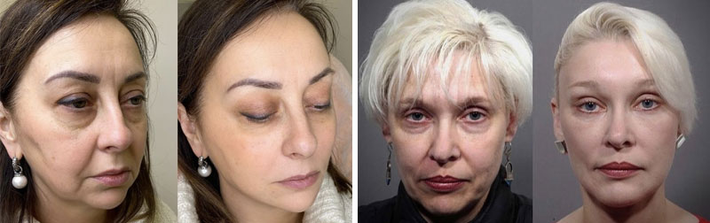

SchönheitsroutinenLesen in 5 min
GESICHTSBEHANDLUNG
Die Zeit verändert uns. Falten werden tiefer und die Haut ist nicht mehr so straff und strahlend wie noch vor ein paar Jahren. Manche Menschen akzeptieren die natürlichen Veränderungen, aber die meisten Frauen wollen so lange wie möglich jung bleiben. Deshalb geben sie viel Geld für regelmäßige Besuche bei Schönheitschirurgen, teure Behandlungen und die besten plastischen Chirurgen aus. Aber was wäre, wenn ich Ihnen sagen würde, dass es einen Weg gibt, den Alterungsprozess auf natürliche Weise zu stoppen? Schließlich macht Plastik die Menschen nicht jünger, sondern anders. Ich verrate Ihnen, wie Sie mit nur einem Produkt die Textur ausgleichen und die Haut straffen, Tränensäcke entfernen und einen frischen Blick bekommen.

Gleich zu Beginn möchte ich Ihnen eines der tausenden von dankbaren Zeugnissen zeigen. Eine Patientin von mir hat ihre Geschichte sehr detailliert aufgeschrieben. Ich hätte ihre Worte nicht besser wiedergeben können.

Als ich anfing, tiefe Falten zu bekommen, schämte ich mich, Dekolleté zu tragen, und mein Gesicht war überhaupt nicht von Kleidung bedeckt. Meine Cremes funktionierten nicht mehr und ich musste nach anderen Wegen suchen, um das Problem zu lösen.
Meine Finanzen erlauben es mir nicht, Geld für eine Kosmetikerin auszugeben. Ich begann, online nach verschiedenen Anti-Aging-Produkten und Gesichtsmassagetechniken zu suchen. Ich habe viele Dinge ausprobiert, vor allem selbstgemachte Masken. Es gab praktisch keinen Effekt
Am Ende hörte ich auf, den Rat der Leute zu befolgen und begann, bei Spezialisten nach einer Antwort zu suchen. Ich bin über einen Artikel gestolpert, in dem eine Kosmetikerin über die Schädlichkeit und Unwirksamkeit vieler teurer Cremes sprach. Ich war neugierig und beschloss, einen Termin für eine Online-Beratung bei ihr zu buchen.
Dabei hat mir die Kosmetikerin vorgeschlagen, eine neue Creme auszuprobieren. Es wurde erst kürzlich von einem führenden Kosmetikunternehmen auf den Markt gebracht, aber es ist bereits bei Stars, Bloggern und Schönheitsexperten beliebt.

Die Creme hat zwei große Pluspunkte - Vielseitigkeit und natürliche Zusammensetzung. Die Creme ist für Augen, Gesicht und Hals geeignet. Es enthält viele natürliche mineralische Inhaltsstoffe und Spurenelemente, die nicht nur den Zustand meiner Haut verbessern, sondern auch die Falten, die mein Leben geplagt haben, entfernen. Und vor allem ist es viel vorteilhafter, eine Creme zu kaufen, die alle Problemzonen beseitigt.
Die Zusammensetzung der Creme hilft, Kollagen zu produzieren. Mit dem Alter lässt diese Funktion nach, und die Creme hilft der Haut, sich zu erneuern, so wie sie es mit 20 getan hat. Ich habe den Effekt sofort zu schätzen gewusst. verstopft die Poren nicht, sondern reinigt und verengt sie. Nach ein paar Tagen merkte ich, dass meine Haut nicht mehr fettig und tagsüber trocken war (ich habe Mischhaut). Das Ergebnis in vierzehn Tagen: befeuchtet und gestrafft.
Jeden Tag schaute ich mir meine Falten genau an. Einige von ihnen waren bereits weg. Und als ich mit dem Kurs fertig war, habe ich 15 Jahre zusammen mit den leeren Packungen der Creme weggeworfen.
Ich bin Ihnen dankbar, dass Sie mir ein so zugängliches Geheimnis der Jugend offenbart haben. Jetzt verwende ich nur noch .

Ich freue mich immer, wenn ich so herzliche Briefe der Wertschätzung erhalte. Ich kann viele solcher Beispiele nennen. Hier zum Beispiel: Angelina, sie ist 45 Jahre alt.
Sie kam zu einer Beratung, um ihr Altern zu verlangsamen. Ich gab ihr ein Peeling und trug eine Verjüngungsmaske auf. Zu Hause habe ich ihr geraten, -Creme zu verwenden. Nach drei Monaten kam die Patientin zu mir und bedankte sich. Was hat sich in dieser Zeit verändert? Zunächst wurde die tote Schicht der Epidermis entfernt, die Durchblutung wurde wiederhergestellt. Dadurch konnten die Vorteile der Creme in die tieferen Schichten der Haut eindringen. Die Tränensäcke unter den Augen, tiefe Falten wurden reduziert, das Gesichtsoval wurde angehoben, die Augenlider wurden geliftet. Die Qualität der Haut ist viel besser, denn Trockenheit und Pigmentflecken sind verschwunden.

Maria war mit ihren 42 Jahren sehr unzufrieden mit ihrem Aussehen. Trockenheit, tiefe Falten, Unebenheiten und Schwellungen. Geplant war eine schrittweise Korrektur in Kombination mit Biorevitalisierung, Mesonit, Botulinumtoxinen und Peelings in einer bestimmten Reihenfolge. Für die häusliche Pflege empfehle ich . Aber wegen gesundheitlicher Probleme konnte die Patientin nicht kommen und sie benutzte nur die Creme für drei Monate. Die Ergebnisse übertrafen nicht nur ihre, sondern auch alle meine Erwartungen. Falten, Pigmentierung und Trockenheit sind verschwunden, Hautstruktur und Teint haben sich ohne weitere kosmetische Eingriffe verbessert.

Nach diesem Experiment habe ich angefangen, vielen meiner Patienten zu empfehlen, die Schwierigkeiten mit der Hautpflege haben.
Viele Frauen haben nicht die Möglichkeit, eine Kosmetikerin zu besuchen und Geld für Laserkorrektur, Mesotherapie, Filler, Biorevitalisierung und andere Verfahren auszugeben. ist so gut wie eine professionelle Hautpflege, sie aktiviert die eigene Kollagenproduktion, baut die Haut Schicht für Schicht wieder auf und lässt Falten weniger auffallen. Und das Beste ist, dass die Creme für jedermann erhältlich ist und nicht nur bei einer Kosmetikerin, sondern direkt beim Hersteller gekauft werden kann.
Heute möchte ich Ihnen einen persönlichen Rabatt auf den Kauf der Creme geben. Sie können es mit 50% Rabatt bestellen. Ich hoffe, dass dieses Produkt das Leben eines anderen Menschen zum Besseren verändern wird.